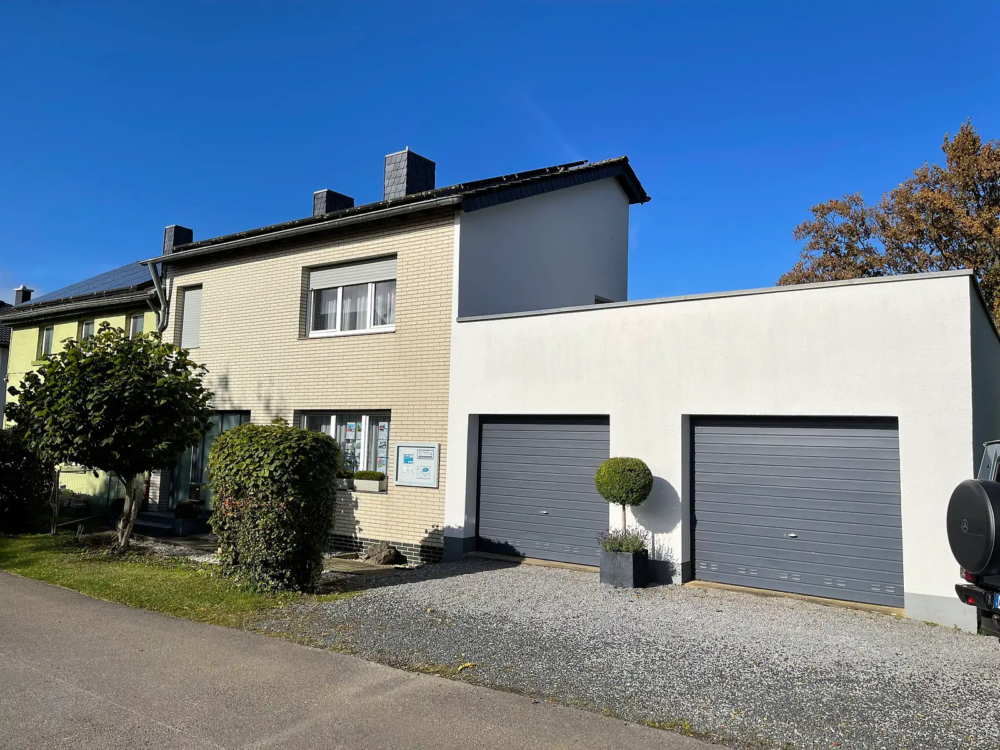
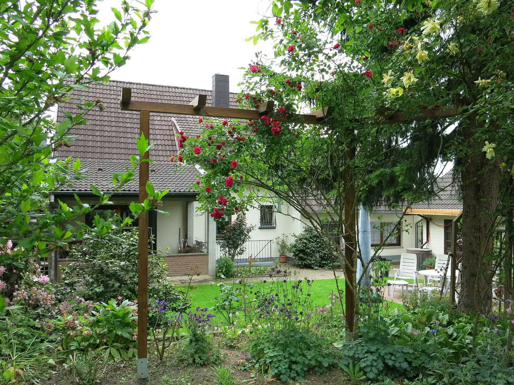
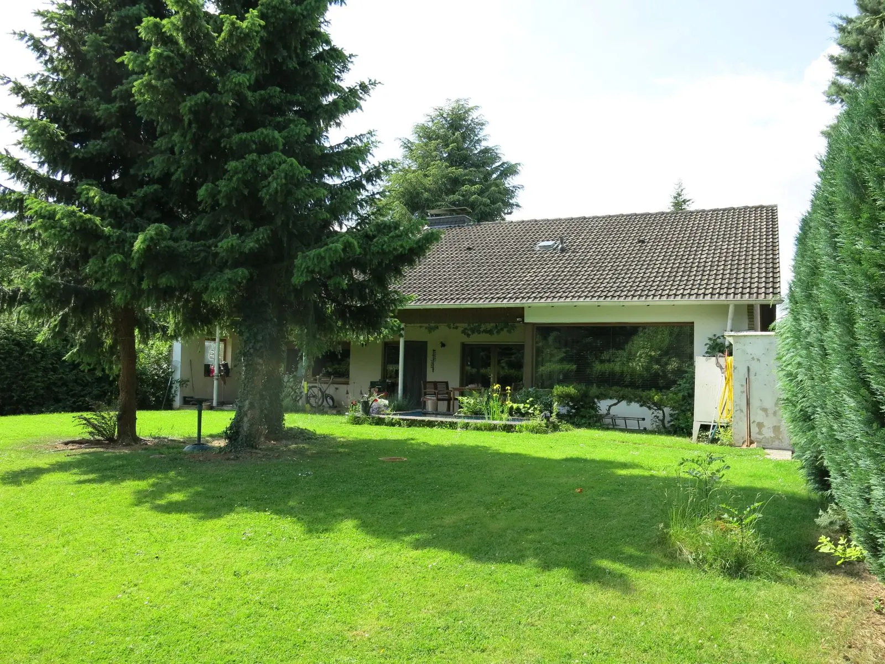
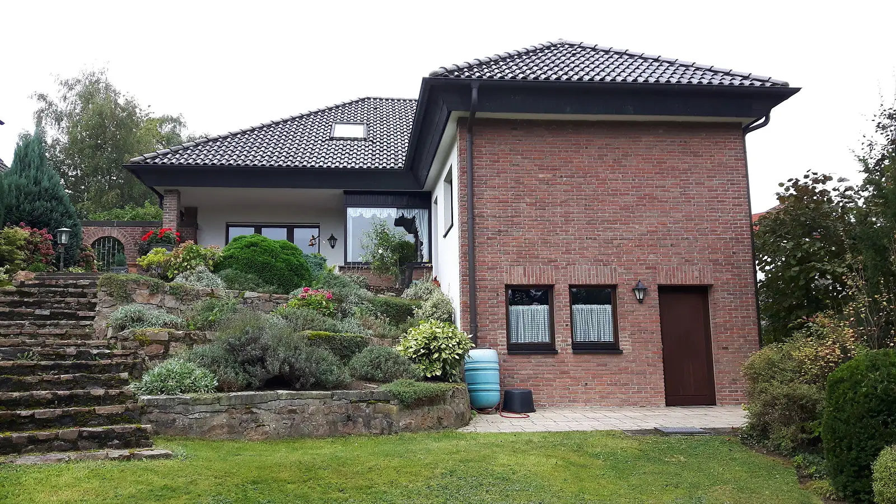
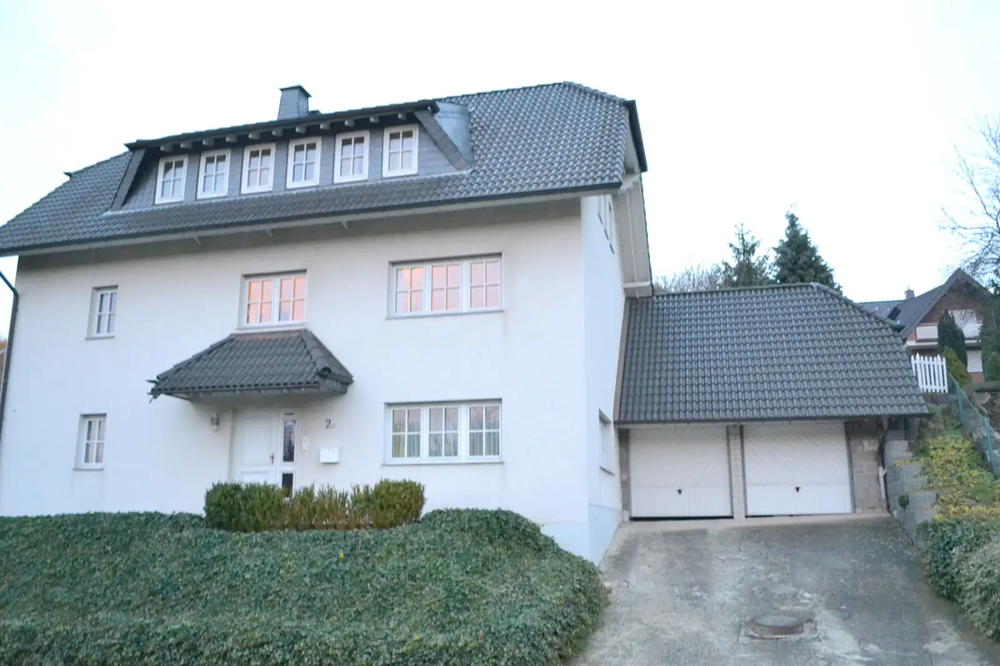
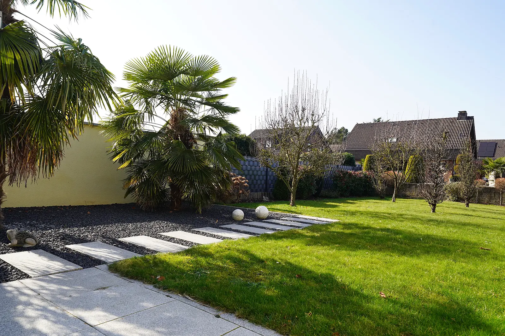

Ritter Immobilien/Verkauft
Referenzen
Ein Auszug aus unseren vermittelten Immobilien: 84 Häuser und Wohnungen im ganzen Kreis Aachen. Weitere Referenzen nennen wir Ihnen gern auf Anfrage.

- Stolberg-BreinigStolberg-Breinig: Neuwertige 2 Zimmer-ETW mit Balkon und eigenen Tiefgaragenstellplatz
- Stolberg-BreinigStolberg-Breinig: Dieses ansprechende Mehrfamilienhaus ist verkauft
- Stolberg-BreinigAuch dieser wunderschöne Bungalow in Stolberg-Breinigerberg haben wir erfolgreich verkauft
- Stolberg-BreinigStolberg-Breinig, in ruhiger Lage, mit Feldbrand verklinkertes EFH, Garage und Traumgarten (Fernsicht)
- Stolberg-BreinigStolberg-Breinig Super schönes Einfamilienhaus mit Garten und großer Garage
- Stolberg-BreinigStolberg-Breinig, super schönes EFH in ruhiger Lage
- Stolberg-BreinigStolberg-Breinig, modernes EFH-Eckhaus in ruhiger Lage
- Stolberg-BreinigStolberg-Breiniger Berg, mit Feldbrand verklinkertes Wohnhaus mit Schwimmbad
- Stolberg-BreinigStolberg-Breinig Freundliches EFH (Wohneigentum) mit Garten und Garage
- Stolberg-ZweifallStolberg-Zweifall: Ideal für 2Personen . . . Urgemütliches Einfamilienhaus mit schönem Garten u. Garage
- Stolberg-ZweifallStolberg-Zweifall: Modernisiertes 1-2Familienhaus mit schönem Garten u. Garage
- Stolberg-ZweifallStolberg-Zweifall, schönes Bruchsteinhaus mit Garage und kleinem Garten
- Stolberg-ZweifallStolberg-Zweifall, top Lage, gemütliches EFH mit großem Garten
- Stolberg-ZweifallStolberg-Zweifall, freistehendes Einfamilienhaus mit Garage und Garten
- Stolberg-ZweifallStolberg-Zweifall, interessantes EFH
- Stolberg-ZweifallStolberg-Zweifall tolles 2-Familien-Bruchsteinhaus mit großem Garten
- Stolberg-ZweifallStolberg-Zweifall, freistehendes Wohnhaus auf großem Areal
- Stolberg-ZweifallStolberg-Zweifall, denkmalgeschützes Bruchsteinhaus mit Garage
- Stolberg-MausbachMausbach, top Lage, freistehendes Bruchstein-EFH
- Stolberg-MausbachStolberg Mausbach, freistehendes Wohnhaus für den gehobenen Anspruch
- Stolberg-MausbachStolberg-Mausbach! Einzigartige Premium-Immobilie auf großem Areal mit phantastischem Weitblick für höchste Ansprüche
- Stolberg-MausbachStolberg-Mausbach, solides 3-Familienhaus
- Stolberg-MausbachStolberg-Mausbach, schöner Bungalow mit kleinem Garten in ruhiger Lage
- Stolberg-MausbachStolberg-Mausbach, sehr gepflegtes Einfamilienhaus mit schönem Garten
- Stolberg-MausbachStolberg-Mausbach tolles, renoviertes Einfamilienhaus auf schönem Grundstück
- Stolberg-MausbachStolberg-Mausbach, super schönes Bruchsteinhaus mit Garten (Fernblick)
- Stolberg (Stadt & Randlage)Modernisiertes Bruchsteinhaus in Randlage Stolberg
- Stolberg (Stadt & Randlage)Stolberg-Randlage: Freistehendes 1-2Familienhaus mit überdachter Terrasse und schönem Garten
- Stolberg (Stadt & Randlage)Stolberg: In ruhiger Wohnlage, ansprechende 4-Zimmer-ETW mit großem Balkon und Tiefgaragenstellplatz
- Stolberg (Stadt & Randlage)Stolberg-Kaiserplatz 1 ansprechendes Wohnhaus mitten in Stolberg
- Stolberg (Stadt & Randlage)Stolberg-Randl., komfortables Wohnhaus in Traumlage
- Stolberg (Stadt & Randlage)2-Familienhaus mit Traumgarten
- Stolberg (Stadt & Randlage)Würselen, top Lage: Schickes, freistehendes 1-2Familienhaus mit Garage
- Stolberg (Stadt & Randlage)Garten und großer Garage
- RoetgenRoetgen-Mulartshütte, ansprechendes, freistehendes Einfamilienhaus in naturverbundenen Lage
- RoetgenRoetgen-Rott, in sehr guter Lage: Super schönes Einfamilienhaus mit Garten und Garage
- RoetgenRoetgen, komfortables Wohnhaus in bevorzugter Top-Lage
- RoetgenRoetgen-Rott: In bevorzugter Wohnlage, super schönes
- RoetgenRoetgen-Rott, ansprechendes Wohnhaus auf großem Areal in Top Lage
- RoetgenRoetgen-Rott, freistehendes Wohnhaus in absoluter Toplage
- RoetgenRoetgen, super modernes Einfamilienhaus
- AachenEilendorf-Randlage: Freistehendes 1-2Familienhaus mit idyllischem Garten
- AachenAachen-Hahn, schönes Bauernhaus mit 2 Garagen und großem Grundstück
- AachenAachen-Innenstadt, solides 5-Familienhaus in Top Innenstadtlage
- Aachen2 Mehrfamilienhäuser in Aachen-Innenstadt
- AachenAachen-Eilendorf, schicke Doppelhaushälfte mit Garage und idyllischen Garten
- AachenAachen-Haaren, in schöner Lage: Einseitig angebautes EFH mit schönem Garten
- Stolberg-BüsbachStolberg-Büsbach, ruhige Lage, top solides Mehrfamilienhaus mit großem Garten
- Stolberg-BüsbachStolberg-Büsbach: In verkehrsgünstiger Lage, 2-Familienhaus mit großer Halle und Garagen
- Stolberg-BüsbachStolberg-Büsbach: Komfort-Wohnhaus mit 3 Wohneinheiten in top Wohnlage
- Stolberg-BüsbachStolberg Büsbach, tolles 1-2Familienhaus mit großem Garten
- Stolberg-BüsbachStolberg-Büsbach, einseitig angebautes Wohnhaus mit phantastischem Fernblick
- Stolberg-LiesterStolberg-Liester: In begehrter Lage, tolles Einfamilienhaus mit Traumgarten und Garage
- Stolberg-LiesterStolberg-Liester: In bevorzugter Lage, ansprechender Komfort-Bungalow mit großer Garage
- Stolberg-LiesterStolberg Liester, Komfortwohnhaus in begehrter Wohnlage
- Stolberg-LiesterStolberg-Liester, geräumiges Wohnhaus mit Garten und 3 Garagen
- Stolberg-LiesterStolberg-Liester, top Bungalow mit großer Südterrasse
- Stolberg-DonnerbergStolberg-Donnerberg, top gemütliches EFH mit Garten u. Garage
- Stolberg-DonnerbergStolberg (Nähe Donnerberg): Neues Kaufangebot! Modernisiertes Einfamilienhaus mit idyllischem Gartenparadies
- Stolberg-DonnerbergStolberg, Nähe Donnerberg, schöner Bungalow
- Stolberg-DonnerbergStolberg-Donnerberg, ansprechender Bungalow mit Garage in ruhiger Lage
- EschweilerEschweiler-Bergrath, In sehr guter Lage: Neuwertiges Einfamilienhaus mit kleinem Garten und Garage
- EschweilerEschweiler, super solides 4-Familienhaus in top Lage
- EschweilerEschweiler-Hücheln, komfortables Wohnhaus mit Traumgarten
- EschweilerEschweiler-Dürwiß, massives Wohnhaus in ruhiger Lage
- Stolberg-MünsterbuschStolberg-Münsterbusch: In schöner Lage, ansprechendes freistehendes Wohnhaus mit großem Garten
- Stolberg-MünsterbuschStolberg-Münsterbusch, schönes, familienfreundliches Wohnhaus mit idyllischem Garten
- Stolberg-MünsterbuschStolberg-Münsterbusch, ansprechender Bungalow in bevorzugter Lage
- Stolberg-DorffStolberg-Dorff: Schönes Bruchsteinhaus mit großer Werkstatt und idyllischem Garten
- Stolberg-DorffStolberg-Dorff: In bevorzugter Lage, ansprechendes, freistehendes Einfamilienhaus mit großem Garten
- Stolberg-GressenichStolberg-Gressenich: Ansprechendes, älteres Einfamilienhaus auf großem Areal
- Stolberg-GressenichStolberg-Gressenich, familienfreundliches Bruchsteinhaus mit schönem Garten
- Stolberg-SchevenhütteStolberg-Schevenhütte, charmantes Einfamilienhaus in absoluter Traumlage
- Stolberg-SchevenhütteSchevenhütte, solides Einfamilienhaus in naturverbundenen Lage
- Stolberg-AtschStolberg-Atsch, top schönes Einfamilienhaus in verkehrs- günstiger Lage
- Stolberg-AtschStolberg-Atsch, herrschaftliches Anwesen: Freistehendes Wohnhaus auf großem Areal
- Stolberg-VichtStolberg-Vicht, am Waldrand gelegenes, freistehendes Komfort-Wohnhaus
- Stolberg-VichtStolberg-Vicht, gemütliches Bruchsteinhaus mit Garten und Garage
- LangerweheLangerwehe, in ruhiger Lage: Freistehendes Wohnhaus mit Garten und Garage
- LangerweheLangerwehe-Hamich, in bevorzugter Wohnlage, freistehender Bungalow mit schönem
- AlsdorfAlsdorf: In ansprechender Lage, schönes Einfamilienhaus mit Traumgarten und Garage
- IndenInden-Lucherberg, für den gehobenen Anspruch: Top, freistehendes Wohnhaus mit schönem Garten und großer Doppelgarage
- Stolberg-VenwegenStolberg-Venwegen, idyllisches Bruchsteinhaus mit schönem Bauerngarten und Garage
- SimmerathSimmerath-Lammersdorf, solides 3-Familienhaus mit Garten und 2 Garagen





Eigene Fotos verkaufter Häuser. Seit vielen Jahren von ImmobilienScout24 als PremiumPartner (2015–2019) und Experte (seit 2012) ausgezeichnet.
Sprechen wir über Ihre Immobilie.
Ein unverbindliches Gespräch, gern bei Ihnen vor Ort. Wir melden uns schnellstmöglich zurück.